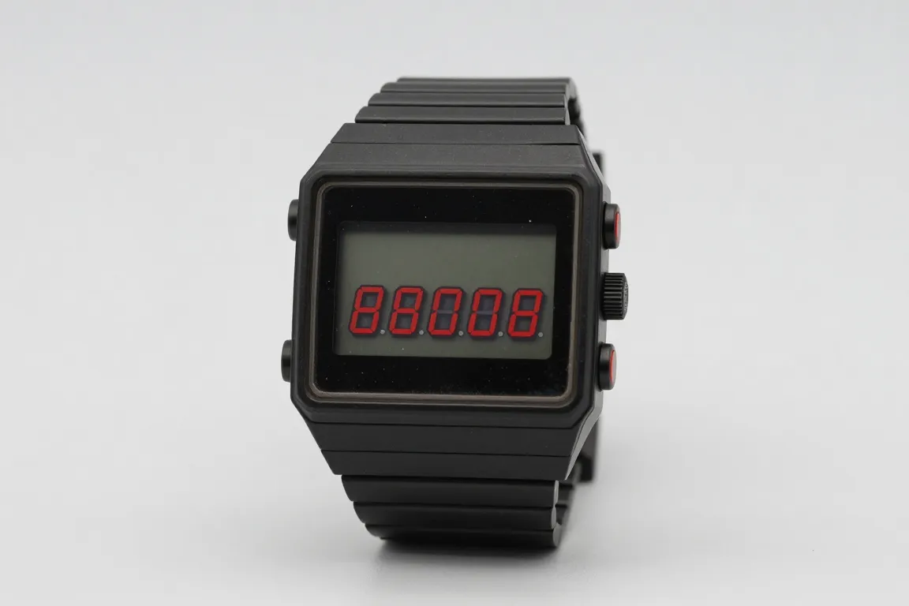

mote · 1969–1989 · også: Kvartsur, LED-ur, LCD-ur, Digitalt ur
Uret uten visere og uten fjær. En kvartskrystall holder tiden, og et rødt lys eller en grå flytende krystall viser sifrene. Seiko Astron fra 1969 og Pulsar fra 1972 satte typen.

Kjerneidé
Et ur er et elektronisk instrument, så det viser tiden som sifre. En krystall uten bevegelige deler holder tiden.
Designprinsipper
Hold tiden med en kvartskrystall som svinger 32 768 ganger i sekundet.
Vis tiden som sifre i rød LED eller i sort på en grå LCD, med en sjusegmentform for hvert siffer.
Lag kassen i stål, gull eller plast, som en flat, dristig form med en firkantet eller en pute-form.
Skjul displayet til brukeren trykker på en knapp på kassesiden, for de tidlige LED-modellene.
Legg til funksjoner i rader av knapper: dato, alarm, stoppeklokke og en ekstra tidssone.
Lag kassen 30 til 45 mm bred og 8 til 12 mm tykk, med en flat topp og et rent ansikt.
Bruk et sort eller mørkerødt displayglass uten visere og uten markeringer.
Prissett uret etter funksjon, slik at et ur med flere funksjoner koster mer.
Antimønstre
En viserskive med en trykt kvartsetikett
En kasse med gravert, drevet eller emaljert arbeid